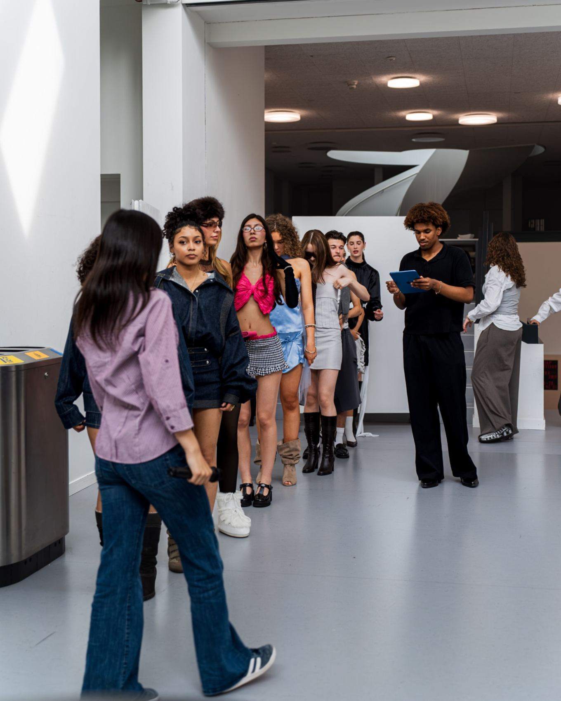
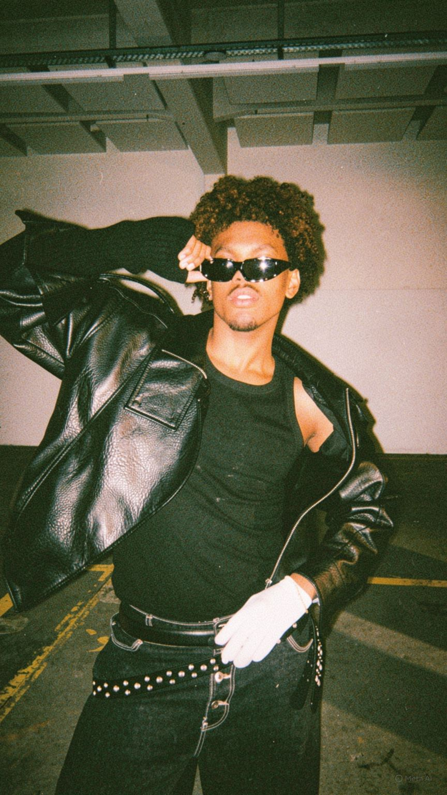

A point
of view.


By Gen Z.
For Gen Z.
DMO is an independent, Gen Z-driven fashion label and creative studio founded by Diamond Owen Igbinedion.
Built around a personal vision and identity, DMO brings together fashion design, creative direction and visual storytelling. Through garments, imagery and runway experiences, it creates space for experimentation and self-expression.
Creating what was missing.
I founded DMO when I was 17. I had seen how easily young people could be present in the Swiss fashion industry without being genuinely recognised or respected. Too often, supporting young talent sounded like a promise rather than something that happened.
So I decided to create my own platform. The Next Runway puts emerging creatives at the centre — not as an afterthought, but as the reason it exists. Alongside this work, I develop fashion design, creative direction, styling and independent fashion projects.
GET IN TOUCH↗